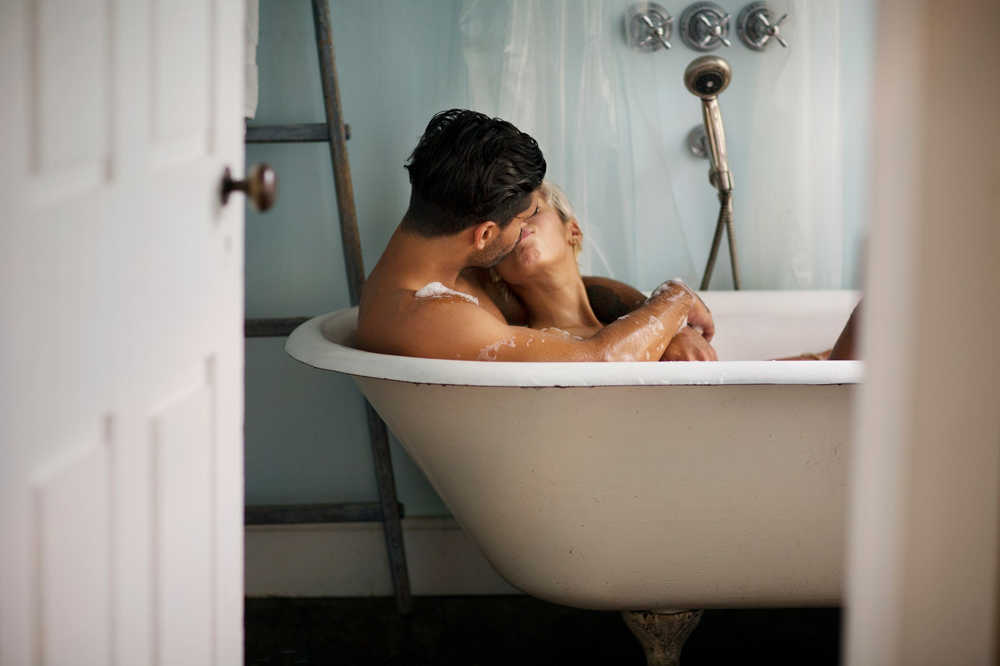

TOMA NOTA
Que la temperatura no sea extrema
25 de agosto de 2021 | Por Sasha Orantes
Sí, sabemos que te gusta el sexo extremo , pero la temperatura del agua debe ser la correcta para hacer de la experiencia un acto sublime. Aunque tú estés muy hot, el agua deber estar más bien templada que hirviendo y, según los expertos, la temperatura debe ser entre 38 y 40 grados. No el calor de la tina no es proporcional al de tu libido.
Date una ducha previa
Sí, es básico que ambos lleguen impecablemente limpios al jacuzzi para que sumergirse sea una experiencia totalmente cristalina. De hecho, para cualquier oportunidad que visualices de tener sexo (ya sea en este artefacto, en una cama o hasta en el auto), esta es una regla.
Los juegos acuáticos
El agua y los chorros divertidos de un jacuzzi, te pueden dar muchas ideas para los juegos previos al sexo. Por ejemplo, aguantar la respiración y llegar hasta sus zonas erógenas para darle placer bajo el agua (procura no tomar agua) y que tu pareja te haga lo mismo, Además, pueden tocarse mutuamente por debajo y jugar con el agua con mucha imaginación (se vale llevar “juguetes” y no estamos hablando de patitos de hule).
No todo combina con un jacuzzi
Han habido muchos caso de personas que tienen accidentes o hasta mueren en un jacuzzi. Y es que la idea de combinar sexo, drogas, alcohol (el rock and roll si se vale) mientras departes y te sumerges en el agua, caliente, puede no ser tan buena idea porque tus vasos sanguíneos se dilatan (y agrégale drogas), te puedes ahogar o resbalar cuando salgas (ojo, esa es otra de las precauciones que debes tomar).

Las posiciones sexuales ideales en un jacuzzi
Sin duda, sumergirse en el húmedo y ondulante mundo de un jacuzzi se presta para llevar cabo distintas posiciones, como por ejemplo la muy ad hoc “El delfín”, que consiste es que la mujer emule la doggy style pero en al agua; “La mesa”, que se hace con la mujer colocando las manos en el borde de la tina con los pies tocando fondo; debes hincarte y mecerla desde la cadera dentro del jacuzzi (lo cual será fácil relativamente porque en el agua pesas menos).
Sexo oral en un jacuzzi
El sexo oral al borde de la tina es una de las posturas más famosas y recurridas. Para la cual no hay más explicación ni recomendación que no se vayan a resbalar, pero el sexo oral dentro del agua si requiere cierto nivel experto (para mayores referencias, revisa la escena del jacuzzi en la biopic de la banda de hair-metal Mötley Crue (“The Dirt”), disponible en Netflix.
La ambientación
Colocar velas aromáticas alrededor del jacuzzi es una buena idea para que la iluminación y la atmósfera sean las adecuadas y la sensualidad fluyo aún más. Además, debes tener a la mano batas, toallas y sandalias listas, para evitar accidentes o ir chorreando agua. El uso de aceites aromáticos para el agua no es recomendable porque pueden dañar el sistema de propulsión de los chorros.
El lubricante perfecto
No, el agua no es suficiente, al contrario, tener sexo acuático sin el lubricante adecuado puede ocasiona molestias como consecuencia de la fricción (incluso quemaduras en la piel). Además, los preservativos que igualmente debes utilizar en el jacuzzi pueden tener problemas dentro del agua por lo que con más razón deberás aplicar el uso de lubricantes resistentes al agua.
Pero claro, por supuesto que la imaginación también es factor para que te sumerjas a todo placer en un jacuzzi en buen (o muyyy mala de preferencia) compañía.